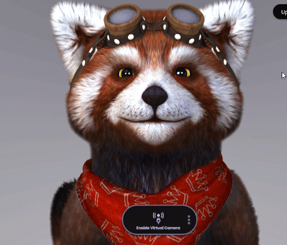

Animaze Desktop: What trackers does Animaze support?
Animaze supports multiple trackers that can work together at the same time, enabling you to have a full avatar embodiment experience. You can activate new trackers by going to Settings > Advanced Tracking Configuration > Select Trackers.

| Tracker Name | Tracker Specs | Requirements |
| Default | default webcam based face and hands tracker. Requires a webcam. | webcam |
| iPhone | ARKit face tracking provided through the iOS Animaze app. | iPhone with latest Animaze iOS application |
| nVidia Maxine AR Tracker | face and shoulders tracking powered by nVidia | webcam and nVidia RTX graphics card |
| Ultraleap | hands tracking technology powered by Ultraleap | Ultrealeap device |
| Sony Mocopi | full body tracking powered by Sony | Mocopi sensors and Mocopi iOS application |
| Axis Perception Neuron | full body tracking powered by Noitom | Perception Neuron suit |
| VMC Protocol Tracker | full body tracking from heterogenous sources. | Various sensors and sender applications |
| OVR Lip-Sync | audio based tracking powered by Oculus (detects 15 mouth shapes) | microphone |
| Simple Audio Based Lip Sync | in-house audio based tracker (detects 3 mouth shapes) | microphone |
| Tobii Eye Tracker | dedicated eye (pupil) tracker which also support head movement tracking powered by Tobii | Tobii 5 Eye Tracker device |